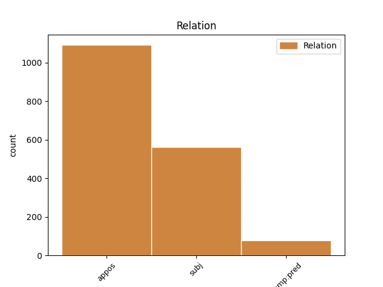
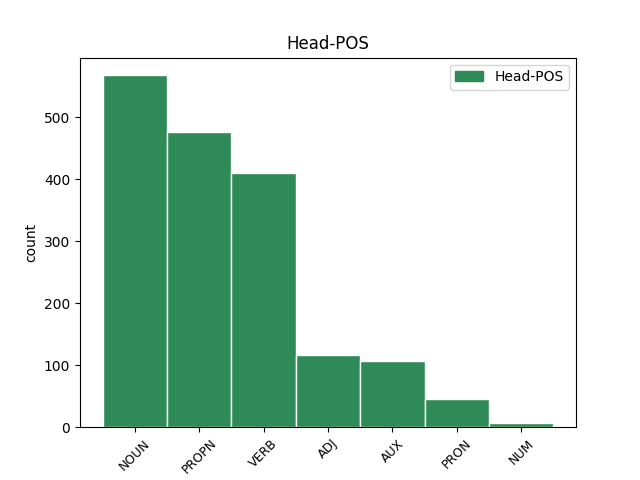
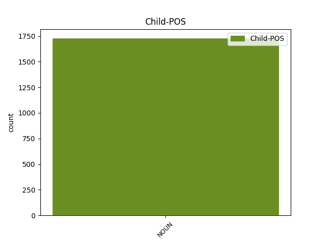

Distribution of features within this leaf



Agreement Rules sorted by frequency.
- When the dependent token is the appositional modifier(appos) of the head token, and the head token is NOUN and the dependent token is NOUN.
1 Плачет _ _ _ _ 0 _ _ _
2 ся _ _ _ _ 0 _ _ _
3 мати _ _ _ _ 0 _ _ _
4 Ростиславля _ _ _ _ 0 _ _ _
5 по _ _ _ _ 0 _ _ _
6 уноши уноша NOUN Nb Case=Loc|Gender=Masc|Number=Sing 0 _ _ _
7 князи кънязь NOUN Nb Case=Loc|Gender=Masc|Number=Sing 6 appos _ ref=198
8 Ростиславѣ _ _ _ _ 0 _ _ _
1 Игорь игорь PROPN Ne Case=Nom|Gender=Masc|Number=Sing 0 _ _ _
2 князь кънязь NOUN Nb Case=Nom|Gender=Masc|Number=Sing 1 appos _ ref=211
3 въ _ _ _ _ 0 _ _ _
4 Руской _ _ _ _ 0 _ _ _
5 земли _ _ _ _ 0 _ _ _
1 и _ _ _ _ 0 _ _ _
2 древо дрѣво NOUN Nb Case=Nom|Gender=Neut|Number=Sing 7 subj _ ref=199
3 с _ _ _ _ 0 _ _ _
4 тугою _ _ _ _ 0 _ _ _
5 къ _ _ _ _ 0 _ _ _
6 земли _ _ _ _ 0 _ _ _
7 прѣклонило прѣклонити VERB V- Aspect=Res|Case=Nom|Gender=Neut|Number=Sing|Strength=Strong|VerbForm=Part|Voice=Act 0 _ _ _
1 Здрави съдравыи ADJ A- Case=Nom|Degree=Pos|Gender=Masc|Number=Plur|Strength=Strong 0 _ _ _
2 князи кънязь NOUN Nb Case=Nom|Gender=Masc|Number=Plur 1 subj _ ref=217
3 и _ _ _ _ 0 _ _ _
4 дружина _ _ _ _ 0 _ _ _
5 побарая _ _ _ _ 0 _ _ _
6 за _ _ _ _ 0 _ _ _
7 христьяны _ _ _ _ 0 _ _ _
8 на _ _ _ _ 0 _ _ _
9 поганыя _ _ _ _ 0 _ _ _
10 плъки _ _ _ _ 0 _ _ _
1 были быти AUX V- Aspect=Res|Case=Nom|Gender=Masc|Number=Plur|Strength=Strong|VerbForm=Part|Voice=Act 0 _ _ _
2 плъци пълкъ NOUN Nb Case=Nom|Gender=Masc|Number=Plur 1 subj _ ref=57
3 Олговы _ _ _ _ 0 _ _ _
4 Ольга _ _ _ _ 0 _ _ _
5 Святьславличя _ _ _ _ 0 _ _ _
1 таче _ _ _ _ 0 _ _ _
2 се _ _ _ _ 0 _ _ _
3 ꙗко _ _ _ _ 0 _ _ _
4 ѹвѣдѣша _ _ _ _ 0 _ _ _
5 мнози _ _ _ _ 0 _ _ _
6 ѿ _ _ _ _ 0 _ _ _
7 болѧръ _ _ _ _ 0 _ _ _
8 сн҃ове сынъ NOUN Nb Case=Nom|Gender=Masc|Number=Plur 9 comp:pred _ ref=102
9 сѹще быти AUX V- Case=Nom|Gender=Masc|Number=Plur|Strength=Strong|Tense=Pres|VerbForm=Part|Voice=Act 0 _ _ _
10 въ _ _ _ _ 0 _ _ _
11 покаꙗнии _ _ _ _ 0 _ _ _
12 томѹ _ _ _ _ 0 _ _ _
13 ꙗкоже _ _ _ _ 0 _ _ _
14 прѣдани _ _ _ _ 0 _ _ _
15 бл҃жныимь _ _ _ _ 0 _ _ _
16 томѹ _ _ _ _ 0 _ _ _
17 съжалиша _ _ _ _ 0 _ _ _
18 сѧ _ _ _ _ 0 _ _ _
19 зѣло _ _ _ _ 0 _ _ _
20 ѥже _ _ _ _ 0 _ _ _
21 тако _ _ _ _ 0 _ _ _
22 дх҃овьныи _ _ _ _ 0 _ _ _
23 оц҃ь _ _ _ _ 0 _ _ _
24 ихъ _ _ _ _ 0 _ _ _
25 посрамленъ _ _ _ _ 0 _ _ _
26 бысть _ _ _ _ 0 _ _ _
27 и _ _ _ _ 0 _ _ _
28 ѿ _ _ _ _ 0 _ _ _
29 манастырѧ _ _ _ _ 0 _ _ _
30 ѿгънанъ _ _ _ _ 0 _ _ _
31 ѥгоже _ _ _ _ 0 _ _ _
32 приꙗтъ _ _ _ _ 0 _ _ _
33 ѿ _ _ _ _ 0 _ _ _
34 блаженаго _ _ _ _ 0 _ _ _
35 ѳеодисиѧ _ _ _ _ 0 _ _ _
1 се _ _ _ _ 0 _ _ _
2 бо _ _ _ _ 0 _ _ _
3 сиꙗ _ _ _ _ 0 _ _ _
4 ти _ _ _ _ 0 _ _ _
5 приведохъ _ _ _ _ 0 _ _ _
6 иже _ _ _ _ 0 _ _ _
7 наѹчихъ _ _ _ _ 0 _ _ _
8 всꙗ _ _ _ _ 0 _ _ _
9 житиискаꙗ _ _ _ _ 0 _ _ _
10 презрѣти _ _ _ _ 0 _ _ _
11 и _ _ _ _ 0 _ _ _
12 тебе ты PRON Pp Case=Gen|Gender=Masc|Number=Sing|Person=2|PronType=Prs 0 _ _ _
13 ѥдиного _ _ _ _ 0 _ _ _
14 б҃а богъ NOUN Nb Case=Gen|Gender=Masc|Number=Sing 12 appos _ ref=2
15 и _ _ _ _ 0 _ _ _
16 г҃а _ _ _ _ 0 _ _ _
17 възлюбити _ _ _ _ 0 _ _ _
1 тъгда _ _ _ _ 0 _ _ _
2 же _ _ _ _ 0 _ _ _
3 хо҃любивыи _ _ _ _ 0 _ _ _
4 кнꙗзь _ _ _ _ 0 _ _ _
5 ѿ _ _ _ _ 0 _ _ _
6 манастырꙗ _ _ _ _ 0 _ _ _
7 великааго _ _ _ _ 0 _ _ _
8 оц҃а _ _ _ _ 0 _ _ _
9 нашего _ _ _ _ 0 _ _ _
10 ѳеодосиꙗ _ _ _ _ 0 _ _ _
11 избьравъ _ _ _ _ 0 _ _ _
12 ѥдиного _ _ _ _ 0 _ _ _
13 отъ _ _ _ _ 0 _ _ _
14 братиꙗ _ _ _ _ 0 _ _ _
15 иже _ _ _ _ 0 _ _ _
16 въ _ _ _ _ 0 _ _ _
17 чьрньчьскѣмь _ _ _ _ 0 _ _ _
18 житии _ _ _ _ 0 _ _ _
19 просиꙗвъша _ _ _ _ 0 _ _ _
20 исаию _ _ _ _ 0 _ _ _
21 наричемааго _ _ _ _ 0 _ _ _
22 того _ _ _ _ 0 _ _ _
23 же _ _ _ _ 0 _ _ _
24 изведъ _ _ _ _ 0 _ _ _
25 игѹмена _ _ _ _ 0 _ _ _
26 постави _ _ _ _ 0 _ _ _
27 въ _ _ _ _ 0 _ _ _
28 манастыри _ _ _ _ 0 _ _ _
29 своѥмь _ _ _ _ 0 _ _ _
30 ѹ _ _ _ _ 0 _ _ _
31 ст҃ааго _ _ _ _ 0 _ _ _
32 мч҃нка _ _ _ _ 0 _ _ _
33 димитриꙗ _ _ _ _ 0 _ _ _
34 иже _ _ _ _ 0 _ _ _
35 и _ _ _ _ 0 _ _ _
36 послѣже _ _ _ _ 0 _ _ _
37 добрыхъ _ _ _ _ 0 _ _ _
38 ради _ _ _ _ 0 _ _ _
39 нравъ _ _ _ _ 0 _ _ _
40 ѥго _ _ _ _ 0 _ _ _
41 поставленъ поставити VERB V- Case=Nom|Gender=Masc|Number=Sing|Strength=Strong|Tense=Past|VerbForm=Part|Voice=Pass 0 _ _ _
42 бысть _ _ _ _ 0 _ _ _
43 епискѹпъмь епископъ NOUN Nb Case=Ins|Gender=Masc|Number=Sing 41 comp:pred _ ref=23
44 ростовѹ _ _ _ _ 0 _ _ _
45 городѹ _ _ _ _ 0 _ _ _
1 А _ _ _ _ 0 _ _ _
2 мои _ _ _ _ 0 _ _ _
3 ти _ _ _ _ 0 _ _ _
4 куряни курянинъ NOUN Nb Case=Nom|Gender=Masc|Number=Plur 6 subj _ ref=23
5 свѣдоми _ _ _ _ 0 _ _ _
6 къмети къметъ NOUN Nb Case=Nom|Gender=Masc|Number=Plur 0 _ _ _
7 подъ _ _ _ _ 0 _ _ _
8 трубами _ _ _ _ 0 _ _ _
9 повити _ _ _ _ 0 _ _ _
10 подъ _ _ _ _ 0 _ _ _
11 шеломы _ _ _ _ 0 _ _ _
12 възлелѣяны _ _ _ _ 0 _ _ _
13 конець _ _ _ _ 0 _ _ _
14 копія _ _ _ _ 0 _ _ _
15 въскръмлени _ _ _ _ 0 _ _ _
1 Нъ _ _ _ _ 0 _ _ _
2 се сии ADJ Pd Case=Nom|Gender=Neut|Number=Sing 0 _ _ _
3 зло _ _ _ _ 0 _ _ _
4 княже _ _ _ _ 0 _ _ _
5 ми _ _ _ _ 0 _ _ _
6 непособіе непособие NOUN Nb Case=Nom|Gender=Neut|Number=Sing 2 appos _ ref=119
1 аже _ _ _ _ 0 _ _ _
2 ли _ _ _ _ 0 _ _ _
3 пропиѥть _ _ _ _ 0 _ _ _
4 с _ _ _ _ 0 _ _ _
5 или _ _ _ _ 0 _ _ _
6 пробиѥть _ _ _ _ 0 _ _ _
7 а _ _ _ _ 0 _ _ _
8 в _ _ _ _ 0 _ _ _
9 безумьи _ _ _ _ 0 _ _ _
10 чюжь _ _ _ _ 0 _ _ _
11 товаръ _ _ _ _ 0 _ _ _
12 испортить _ _ _ _ 0 _ _ _
13 то _ _ _ _ 0 _ _ _
14 како _ _ _ _ 0 _ _ _
15 любо _ _ _ _ 0 _ _ _
16 тѣмъ _ _ _ _ 0 _ _ _
17 чии чии PRON Pi Case=Nom|Gender=Masc|Number=Sing|PronType=Int 0 _ _ _
18 то _ _ _ _ 0 _ _ _
19 товаръ товаръ NOUN Nb Case=Nom|Gender=Masc|Number=Sing 17 subj _ ref=54
1 а _ _ _ _ 0 _ _ _
2 гражаномʼ гражанинъ NOUN Nb Case=Dat|Gender=Masc|Number=Plur 5 subj _ ref=314r10
3 же _ _ _ _ 0 _ _ _
4 всегда _ _ _ _ 0 _ _ _
5 единым единъ NUM Ma Case=Dat|Gender=Masc|Number=Plur 0 _ _ _
6 ѿ _ _ _ _ 0 _ _ _
7 многаго _ _ _ _ 0 _ _ _
8 трꙋда _ _ _ _ 0 _ _ _
9 изнемогахꙋ _ _ _ _ 0 _ _ _
10 и _ _ _ _ 0 _ _ _
11 падахꙋ _ _ _ _ 0 _ _ _
1 и _ _ _ _ 0 _ _ _
2 сице _ _ _ _ 0 _ _ _
3 ѥму _ _ _ _ 0 _ _ _
4 стенющю _ _ _ _ 0 _ _ _
5 и _ _ _ _ 0 _ _ _
6 плачющю _ _ _ _ 0 _ _ _
7 сꙗ _ _ _ _ 0 _ _ _
8 и _ _ _ _ 0 _ _ _
9 сльзами _ _ _ _ 0 _ _ _
10 землю _ _ _ _ 0 _ _ _
11 омачающю _ _ _ _ 0 _ _ _
12 съ _ _ _ _ 0 _ _ _
13 въздыхании _ _ _ _ 0 _ _ _
14 частыими _ _ _ _ 0 _ _ _
15 бога _ _ _ _ 0 _ _ _
16 призывающю _ _ _ _ 0 _ _ _
17 приспѣша _ _ _ _ 0 _ _ _
18 вънезапу _ _ _ _ 0 _ _ _
19 посълании посълати VERB V- Case=Nom|Gender=Masc|Number=Plur|Strength=Weak|Tense=Past|VerbForm=Part|Voice=Pass 0 _ _ _
20 отъ _ _ _ _ 0 _ _ _
21 Ст҃опълка _ _ _ _ 0 _ _ _
22 зълыꙗ _ _ _ _ 0 _ _ _
23 его _ _ _ _ 0 _ _ _
24 слугы слуга NOUN Nb Case=Nom|Gender=Masc|Number=Plur 19 appos _ ref=true
25 нем҃лстивии _ _ _ _ 0 _ _ _
26 кръвопиицѣ _ _ _ _ 0 _ _ _
27 братоненавидьници _ _ _ _ 0 _ _ _
28 люти _ _ _ _ 0 _ _ _
29 зѣло _ _ _ _ 0 _ _ _
30 сверѣпа _ _ _ _ 0 _ _ _
31 звѣри _ _ _ _ 0 _ _ _
32 душю _ _ _ _ 0 _ _ _
33 изимающе _ _ _ _ 0 _ _ _
1 аще _ _ _ _ 0 _ _ _
2 суть _ _ _ _ 0 _ _ _
3 б҃зи _ _ _ _ 0 _ _ _
4 то _ _ _ _ 0 _ _ _
5 единого единъ NUM Ma Case=Gen|Gender=Masc|Number=Sing 0 _ _ _
6 собе _ _ _ _ 0 _ _ _
7 послють _ _ _ _ 0 _ _ _
8 б҃а богъ NOUN Nb Case=Gen|Gender=Masc|Number=Sing 5 appos _ ref=83.6
9 да _ _ _ _ 0 _ _ _
10 имуть _ _ _ _ 0 _ _ _
11 с҃нъ _ _ _ _ 0 _ _ _
12 мои _ _ _ _ 0 _ _ _
1 Началникъ начальникъ NOUN Nb Case=Nom|Gender=Masc|Number=Sing 4 subj _ ref=true
2 же _ _ _ _ 0 _ _ _
3 ѹбиицѧмъ _ _ _ _ 0 _ _ _
4 петръ петръ PROPN Ne Case=Nom|Gender=Masc|Number=Sing 0 _ _ _
5 кучковъ _ _ _ _ 0 _ _ _
6 зѧть _ _ _ _ 0 _ _ _
Disagree Examples:
1 прьвое _ _ _ _ 0 _ _ _
2 море _ _ _ _ 0 _ _ _
3 дербеньское дербентьскыи ADJ A- Case=Nom|Degree=Pos|Gender=Neut|Number=Sing|Strength=Weak 0 _ _ _
4 дорїѧ дория NOUN Nb Case=Nom|Gender=Fem|Number=Sing 3 appos _ ref=1
5 хвалитьскаа _ _ _ _ 0 _ _ _
1 второе _ _ _ _ 0 _ _ _
2 море _ _ _ _ 0 _ _ _
3 индѣнское индѣискыи ADJ A- Case=Nom|Degree=Pos|Gender=Neut|Number=Sing|Strength=Weak 0 _ _ _
4 гори дория NOUN Nb Case=Nom|Gender=Fem|Number=Sing 3 appos _ ref=1
5 гондꙋстаньскаа _ _ _ _ 0 _ _ _
1 третье _ _ _ _ 0 _ _ _
2 море _ _ _ _ 0 _ _ _
3 черное чьрныи ADJ A- Case=Nom|Degree=Pos|Gender=Neut|Number=Sing|Strength=Weak 0 _ _ _
4 дорїѧ дория NOUN Nb Case=Nom|Gender=Fem|Number=Sing 3 appos _ ref=1
5 стемъбольскаа _ _ _ _ 0 _ _ _
1 а _ _ _ _ 0 _ _ _
2 нас _ _ _ _ 0 _ _ _
3 ѿпѹстили отъпустити VERB V- Aspect=Res|Case=Nom|Gender=Masc|Number=Plur|Strength=Strong|VerbForm=Part|Voice=Act 0 _ _ _
4 голими _ _ _ _ 0 _ _ _
5 головами голова NOUN Nb Case=Ins|Gender=Fem|Number=Plur 3 comp:pred _ ref=3
6 за _ _ _ _ 0 _ _ _
7 море _ _ _ _ 0 _ _ _
1 а _ _ _ _ 0 _ _ _
2 из _ _ _ _ 0 _ _ _
3 дербентѹ _ _ _ _ 0 _ _ _
4 послали _ _ _ _ 0 _ _ _
5 их _ _ _ _ 0 _ _ _
6 к _ _ _ _ 0 _ _ _
7 ширванши _ _ _ _ 0 _ _ _
8 въ _ _ _ _ 0 _ _ _
9 рдѹ орда NOUN Nb Case=Acc|Gender=Fem|Number=Sing 0 _ _ _
10 его _ _ _ _ 0 _ _ _
11 коитѹлъ коитулъ NOUN Nb Case=Acc|Gender=Masc|Number=Sing 9 appos _ ref=4